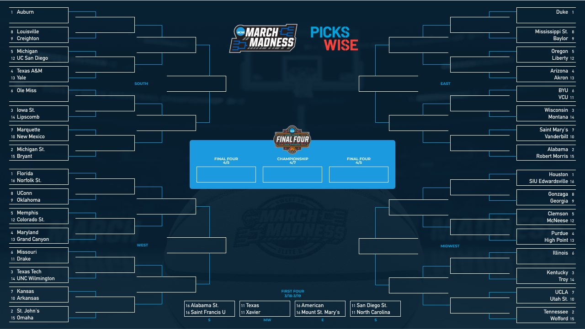

Projects

NCAA Data Modeling
Built ML models to predict team performance trends, leveraging scikit-learn and feature engineering on sports datasets.
GitHub ↗Car Resale Price Prediction
Developed regression models and feature pipelines to forecast used car prices using historical sales data.
GitHub ↗Credit Risk Classification
Implemented classification models (Random Forest, XGBoost, CatBoost) to predict credit risk with >93% accuracy.
GitHub ↗
University Employment Management System
Designed and implemented a MySQL-based employee management system for efficient on-campus job tracking.
GitHub ↗